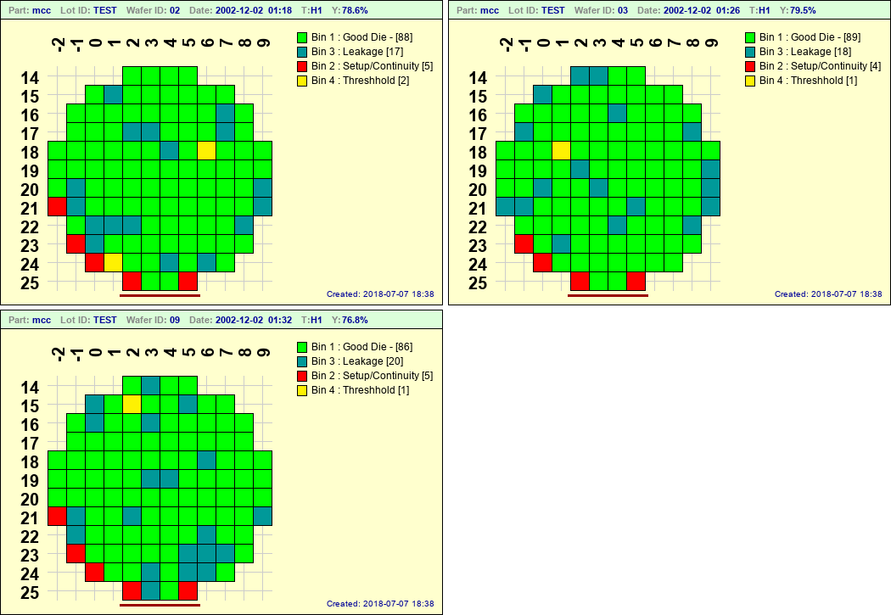

Basic Usage¶
After installation, have a look in the distribution stdf directory. There are three sample files in there... I believe lot2.stdf and lot3.stdf originated from the Galaxy web site and a595.stdf came from a package called [RADAR] (https://sites.google.com/site/stdfradar/) (I have other stdf files I've tested the app with, but they are proprietary and I can't distribute them)
Run the command:
$ stdf2map -o test a595
Note
If you didn't copy the sample stdf files to your stdf_path directory during installation, you will need to cd into the distribution stdf directory for the above command to work.
The command above should provide three output files test.png, test-1.png, and test-2.png for wafers 02, 03 and 09 respectively. The images should be similar (but larger) than the following:
Several things to note:
- The .stdf extension on input files is optional
- The -o option specifies a base output file name. Because clobbermode is set to false by default in stdf2map.config, names for additional maps were created automatically by appending integers to the base output name. If you run the exact same command again, in the same directory, you will get output files test-3.png, test-4.png and test-5.png
- Since the image type was not specified, .png was used as the default (default format is set in the map_format variable in the config file). The default format can be overriden by explicitly stating the output format (i.e stdf2map -o test.jpg a595)
The title line in the wafermap is fairly self-explanatory, however the T:H1 warrants an explanation.
- T - stands for Test
- H - means the hardware bin (hbin) is being mapped This would be S if the software bin (sbin) were being mapped.
- 1 - indicates the First testset for this wafer (covered in more detail in Multiple Test Flagging
Now try the command:
$stdf2map a595
You will get the same three maps, but this time, they will be placed in your config file map_path directory, and they will have very different filenames:
- mcc_02_20021202-091854-h1.png
- mcc_03_20021202-092610-h1.png
- mcc_09_20021202-093226-h1.png
File Globbing¶
You can create multiple maps at once using file globbing. In the distribution stdf directory, try the command:
$stdf2map *.stdf
and you should get several maps in your map_path directory. Some will be duplicates of the ones you just created above and some will have different colors. (We will get to the reason why the colors are different when we cover optional config files.)
Some linux distributions support the globstar feature ( enabled with 'shopt -s globstar' ) which can be very useful for recursively generating maps from stdf files in multiple subdirectory levels. For example, assume your stdf directory is /home/user/stdf/ and you have stdf files in multiple subdirectories by part/tester/lot. You can create maps for all of the stdf files with the simple command stdf2map /home/user/stdf/**/*.stdf
Automatic File Naming¶
Since you can create gobs of maps using file globbing, output file names need to be unique and that is controlled by the auto_filename format string in the config file. The default is:
auto_filename = "%prefix%part_%waferid_%tshum-%binmap%testset%suffix%thumbstr"
but you have lots of different options when it comes to constructing the auto-generated naming method. Here's a excerpt of comments from the stdf2map.config file:
# Auto-generated filename format (i.e no -o option on command line)
#---------------------
# Valid Keywords are:
#---------------------
# %part - Part ID
# %lotid - Wafer lotid
# %waferid - Wafer ID
# %nowhex - Current unix time in hex
# %nowdec - Current unix time in decimal
# %nowhum - Current human readable gmtime (Ymd-HMS)
# %tshex - Test datetime unix time in hex
# %tsdec - Test datetime unix time in decimal
# %tshum - Test datetime - Human readable gmtime (Ymd-HMS)
# %testset - Test number as specified with -t command line option
# %binmap - "Will be either H for HBIN or S for SBIN"
# %prefix - User specified string (see below)
# %suffix - User specified string (see below)
# %thumbstr - ONLY inserted if thumb_mode = True (see below)
Note
The default auto_filename format string will put ALL maps in the same output directory. Probably not an ideal situation for thousands of maps... it may be preferable to have output maps in subdirectories by part and lotid, thus give some attention to the following comments and experiment with what works best for you.
more auto_filename comments:
#---------------------
# Note that string literals remain unchanged, thus if you wanted
# a fab number for example, at the beginning of all your files you could use
# something like: "FAB1_%part_waferid_...etc"
# You can also use path separators appropriate to your system
# (use \ on Windows) to create a directory structure.
# For example, the following would put maps in sub-directories by part and lotid
# ( sub-directories are automatically created if they don't exist )
# auto_filename = '%prefix%part\%lotid\%waferid_%binmap%testset%suffix%thumbstr'
auto_filename = "%prefix%part_%waferid_%tshum-%binmap%testset%suffix%thumbstr"
# If "clobbermode" = True, output files of the same name will be overwritten,
# if False, a "dash-number" will be appended just preceding the file type until
# a unique file name is obtained (i.e file-1, file-2, file-3 .... file-n)
clobbermode = false
# Prefix and suffix are arbitrary user-defined strings that are provided
# primarily as a means of customizing the filename from within config files
# They can be placed anywhere in the format string, they don't necessarily
# need to go at the beginning or end.
prefix = ""
suffix = ""
# Thumb_mode should ALWAYS be false in the main configuration file.
# It is provided as a means of enabling thumbnail mode from a user
# configuration file. The ONLY effect thumb_mode has is the automatic
# insertion of "thumbstr" in the output filename (assuming 'auto_filename'
# contains the %thumbstr keyword)
thumb_mode = false
thumbstr = "_thumb"
# Automatically translate case in the output filename. Valid values are:
# 'upper','lower','capitalize' (Only capitalizes the first letter)
# If it is commented out, no case changing will be performed
auto_translate = 'lower'
There are a number of options you can tweak in the config file. Most of them should be fairly intuitive, the ones that aren't I've tried to clarify with comments. Some of them can be superseded via command line options, discussed in the next section.